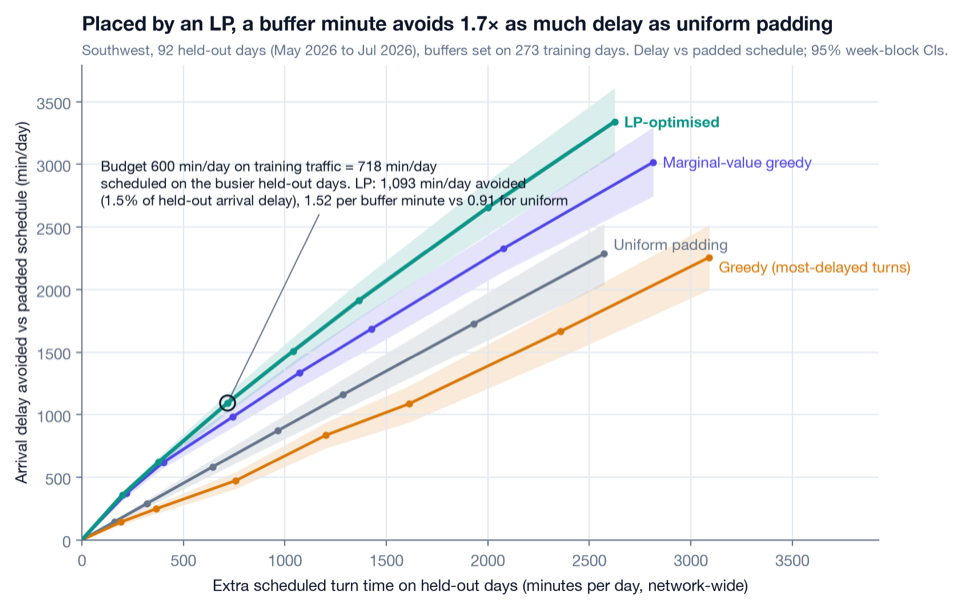
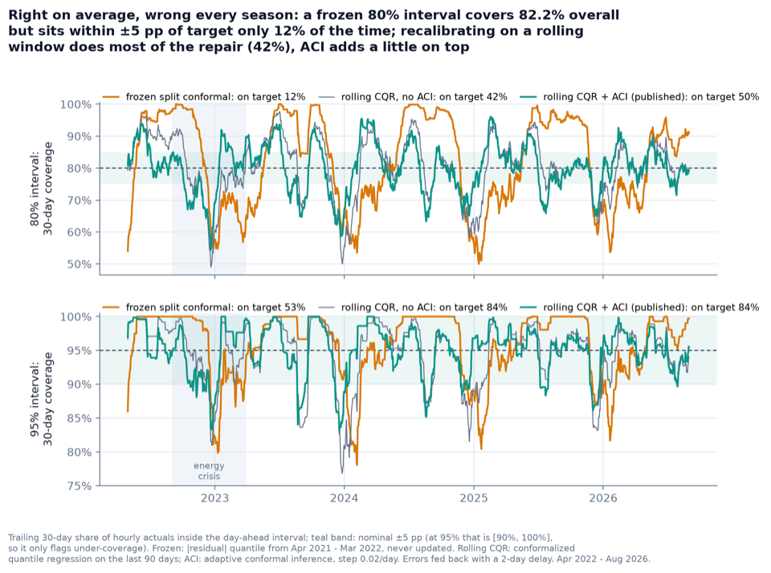
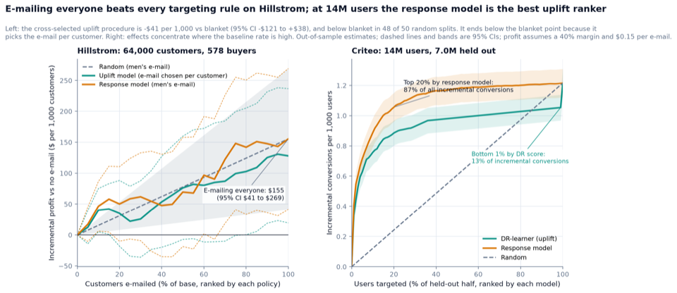
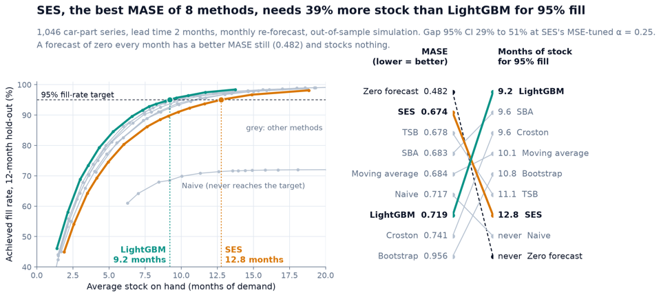
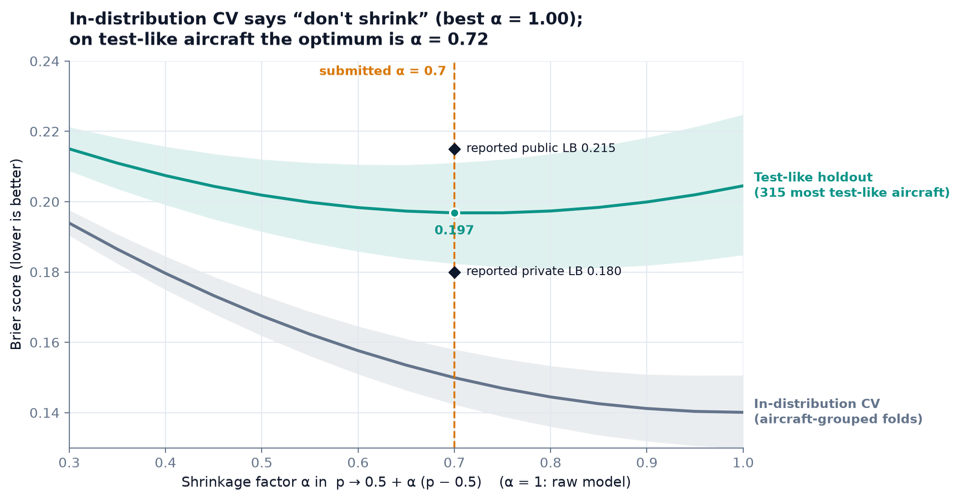

Pierre Chambet
Decisions for operations that run on uncertain data.
I forecast honestly, simulate what can go wrong and optimise what you control, then ship it as software people use. Airline fleets, freight, power grids. Founder of SmartFleetOptim, previously on the Air France Network team, engineer from Télécom SudParis.
Tomorrow’s electricity demand in France, forecast this morning
Loading the latest run
Median with 80% and 95% prediction intervals from gridcast. A scheduled job re-runs the model every day on public RTE and Open-Meteo data and scores every past forecast in the open. How it works
Selected work
-
Where should an airline add turnaround buffer to stop delays spreading?
On 7 million US flights, 40% of cause-coded delay minutes are reactionary: the aircraft came in late. A turn absorbs delay up to a threshold, then passes it on almost minute for minute. Placed by a scenario linear program, a buffer minute avoids 1.7 times as much delay as uniform padding on held-out days; padding the most-delayed turns does worse than uniform.

-
Can a demand forecast publish uncertainty bands that stay honest through a crisis?
On average, yes: over 38,732 out-of-sample hours the 80% and 95% intervals cover 80.0% and 95.0% of French demand. Month to month only partly: a frozen interval is on target 12% of the time, rolling recalibration 50%. Compared fairly, RTE's own point forecast is more accurate, and the page says so. The forecast runs again every day in public.

-
Who should get the marketing e-mail?
On a 64,000-customer randomised test, the honest answer is everyone: blanket sending earns $155 per 1,000 customers, and the best uplift procedure chosen out of sample falls short of it in 48 of 50 splits. Scored on its own data, the same contest would have promised a gain. At 14 million users the picture changes, and the analysis shows why.

-
How much spare-parts stock buys a 95% fill rate when demand is mostly zeros?
On 1,046 car-part series, the method with the best forecast error (SES) needs 39% more stock than a LightGBM quantile model to serve 95% of demand, out of sample (95% CI 29–51%). Pinball loss ranks methods the way the shelf does; MASE does not.

-
Will a corrosion-risk model hold on aircraft it has never seen?
Adversarial validation showed the test fleet was a different population (AUC 0.86). Validating on test-like aircraft set the one parameter that mattered, a shrinkage of α = 0.72 that grouped cross-validation said was useless. 22nd on the public leaderboard, 6th on the private one, 2nd overall at the Airbus × IBM × AWS hackathon.

-
How many reserve aircraft should an airline hold, of which type, at which base?
SmartFleetOptim stress-tests spare-fleet plans across disruption, demand and delivery-delay scenarios, and compares them on tail risk rather than on a single forecast. I ran technical sessions with the operations and data teams of Finnair, SWISS and Air Canada on their own public fleet data.
smartfleetoptim.comCode is private
More projects
- FreightSightLanded-cost allocation for importers: a two-pass Decimal engine, Postgres row-level security, an Odoo connector.
- Three-ERP consolidationOdoo, an accounting FEC file and a warehouse API reconciled in DuckDB; 22 planted discrepancies, all found, none extra, queried through an MCP server.
- Fiduciary agentSwiss QR-bills and camt.053 statements: code builds every entry, an agent classifies only what no rule covers, a person approves.
- HeliosWalk-forward battery arbitrage on French day-ahead prices with model predictive control and Wasserstein-robust optimisation.
- Differentiable particle filterOptimal-transport resampling in PyTorch, checked against exact Kalman gradients.
- Facebook100 social structureHomophily, link prediction and communities on all 100 campus graphs.
- Gait at five walking speeds2,544 knee cycles from 52 adults: re-identification, variance components and grouped cross-validation.
- Functional data clusteringClustering curves and covariates together, in R; what silhouette tuning costs in ARI.
- Hidden Markov models from scratchDo hidden states earn their parameters? Rain spells and unseen-speaker speech, judged on held-out data.
- Mushroom toxicityWhat a multiple correspondence analysis keeps and loses, with honest shuffled cross-validation.
- From bag-of-words to BERTEvery rung of the NLP ladder on identical splits, with label budgets.
- MLP against CNN on MNISTPaired tests, calibration, selective prediction and shift robustness.
Experience
SmartFleetOptim, founder and lead engineer
Airline spare-fleet strategy under uncertainty, from discovery calls with airlines to a production deployment. Supported by IMT Starter.
Airbus × IBM × AWS hackathon, machine learning lead
Corrosion-risk model. Adversarial validation exposed a train/test shift; calibrated probabilities moved the team from 22nd on the public leaderboard to 6th on the private one, 2nd overall.
NAIST, Japan, visiting research intern
Self-directed review of optimal transport for deep learning; workshop and ICLR paper review for a computational systems biology lab.
Air France Network, data analyst, program regulation
Built the Python decision-support tool and Power BI dashboard that Network management used to allocate spare aircraft across long- and medium-haul operations.
Télécom SudParis, Diplôme d’Ingénieur
Data analysis and pattern classification. MSc-equivalent engineering degree.
Open source
Small fixes, merged upstream, in libraries I use.
- POTWasserstein distance exponent in the user guide
- pytorch-grad-camMatplotlib 3.8 crash in factorization plots
- pytorch-grad-camCrash when model.eval() does not return self
- princeMCA docstrings
- gradioImage types documentation
- gradioSlider patterns documentation
Teaching
Deep Learning from Scratch rebuilds neural networks from a single NumPy neuron to convolutional networks, every gradient derived by hand, published as an English series on LinkedIn with notebooks and PDF guides.
My optimal transport notes from NAIST go from Monge and Kantorovich to Wasserstein generative models.